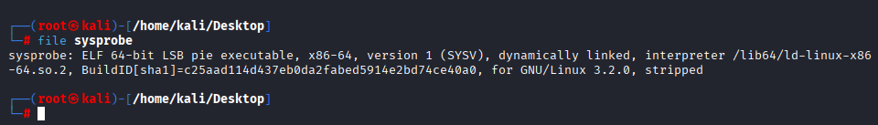
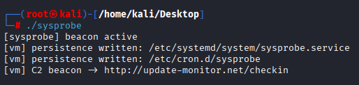
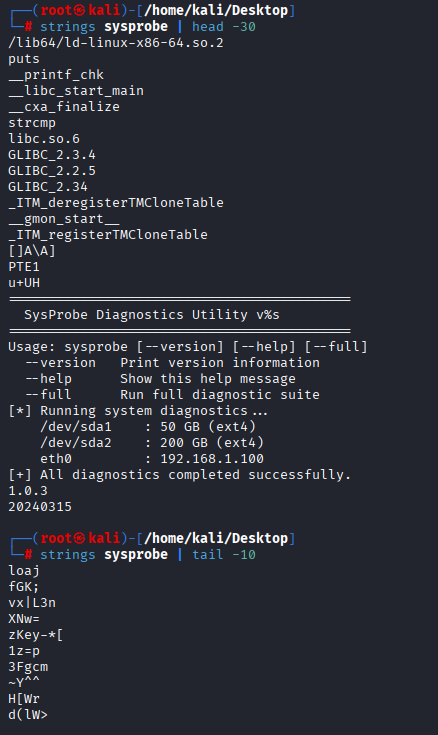
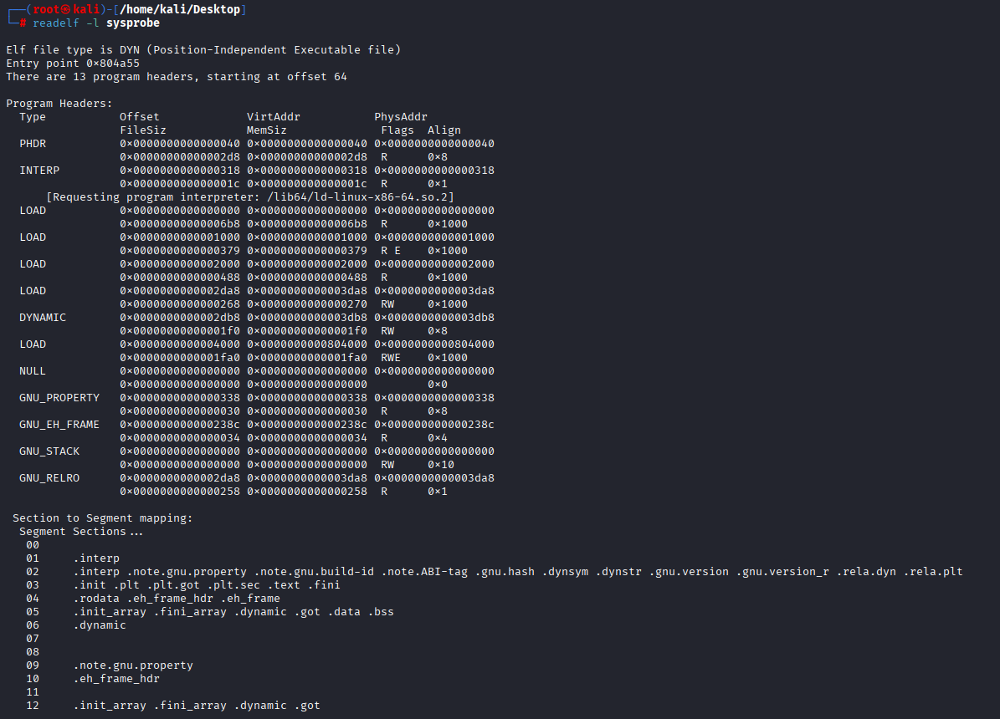
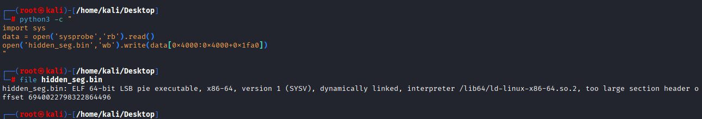
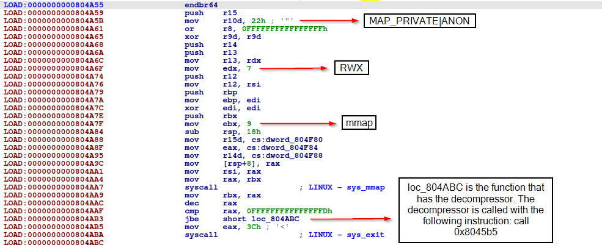
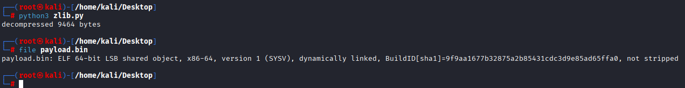
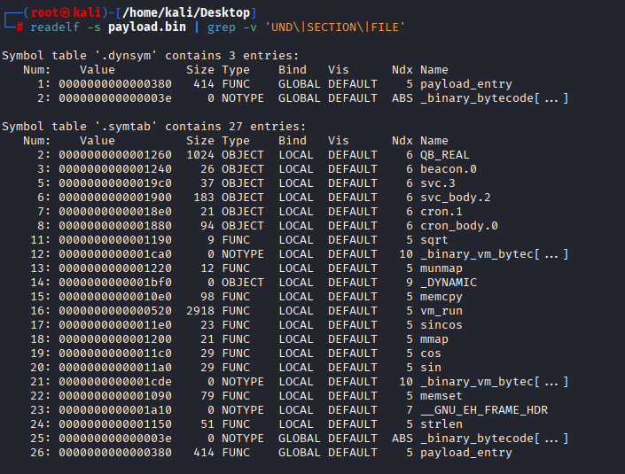
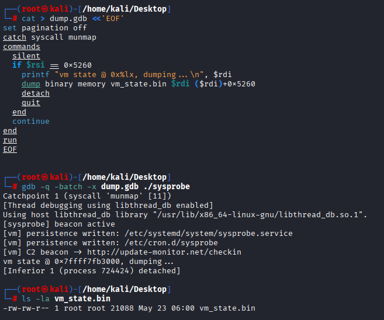
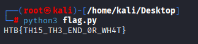

Sysprobe - Five Layers of Onion, One DFT, One Flag
Challenge
Category: Reverse Engineering
Difficulty: 🔴 Hard
Task Force Nightfall has intercepted a binary pulled from a compromised monitoring node inside a critical infrastructure operator. On the surface it is exactly what it claims to be - a routine diagnostics utility, the kind deployed silently across thousands of managed endpoints. Clean signature, legitimate-looking output, nothing that trips an alert. But the node it was found on had no business running it. And the traffic logs don’t match what a diagnostics tool should produce.
We’re given a single 24 KB stripped 64-bit ELF named sysprobe. No data files, no source. The flag is in there somewhere.
TL;DR
outer ELF (decoy main, never reached)
└─ real entry → hidden RWE segment at VMA 0x804000 (no section header)
└─ nested ELF "loader"
└─ raw DEFLATE inflate of an embedded blob
└─ payload ELF (un-stripped, has symbols!)
└─ XOR-deobfuscate 62 bytes of bytecode (deob[i] = obf[i] ^ (i+0x42))
└─ stack-VM `vm_run` interprets it
└─ opcode 0x22 = DFT magnitude > threshold check
└─ result bitmap → pack bits MSB-first → FLAG
Five payload layers. Plus three smokescreens: malware-themed runtime output, fake diagnostics strings in .rodata, and a “C2 beacon / persistence” subroutine that does (real but harmless) file writes to make analysts panic.
⚠️ Safety note before you run it
The “malware” theme is partly real. If you run ./sysprobe as root it will write two files:
/etc/cron.d/sysprobe(a 15-minute cron entry)/etc/systemd/system/sysprobe.service(a systemd unit)
Neither references a binary that exists (they both point to /usr/local/bin/sysprobe), but the files are written. Run as an unprivileged user or in a disposable VM/container. If you ran as root, just delete both files, there’s nothing else to clean up. The “C2 beacon” line is only printed; no network call is made.
1. First contact
$ file sysprobe
sysprobe: ELF 64-bit LSB pie executable, x86-64, version 1 (SYSV), dynamically linked,
interpreter /lib64/ld-linux-x86-64.so.2, ... stripped
PIE, dynamically linked, stripped, 24 KB.

$ ./sysprobe
[sysprobe] beacon active
[vm] persistence written: /etc/systemd/system/sysprobe.service
[vm] persistence written: /etc/cron.d/sysprobe
[vm] C2 beacon -> http://update-monitor.net/checkin
Looks like a malware sample. The four lines are designed to make you think “ransomware / RAT / persistence rootkit” and dive into a strace rather than disassembly. Don’t take the bait, strings reveals the misdirection.

strings finds two disjoint string sets:
$ strings sysprobe | head -30 # the .rodata strings
$ strings sysprobe | tail -10 # the high-entropy garbage at the end
The first block is harmless diagnostics text - Usage:, CPU Information, Memory Information, –version, etc. The second block is high-entropy noise (the compressed payload).
Crucially, the four runtime strings you just saw ([sysprobe] beacon active, [vm] persistence written: ..., [vm] C2 beacon -> ...) are NOT visible in strings. They’re not in .rodata. So where are they?

2. Layer 1 - The decoy main
Section headers say the binary is tiny:
$ objdump -h sysprobe | grep -E '\.text|\.rodata|\.data|\.bss'
15 .text 0x000002c9 vma 0x10a0
17 .rodata 0x0000038b vma 0x2000
24 .data 0x00000010 vma 0x4000
25 .bss 0x00000008 vma 0x4010
.text is 0x2c9 bytes, about 700. The function at 0x10a0 (which IDA labels main/start) does exactly what strings suggested: prints the diagnostics, parses --help/--version/--full, exits.
But look at the ELF header:
$ readelf -h sysprobe | grep -i entry
Entry point address: 0x804a55
0x804a55 - far above the section table’s reach. Compare program headers (what the loader actually maps) to the section headers (what objdump -d shows):
$ readelf -l sysprobe
...
LOAD 0x0000000000004000 0x0000000000804000 0x0000000000804000
0x0000000000001fa0 0x0000000000001fa0 RWE 0x1000
There it is: an extra LOAD segment, mapped at virtual address 0x804000, file offset 0x4000, size 0x1fa0, permissions R W E, and covered by no section header. The ELF entry point 0x804a55 sits inside it (offset 0xa55 into the segment).
This is a classic packer pattern:
- Section headers are informational only at runtime, the dynamic loader (
ld-linux) ignores them and uses program headers. - Disassembers and
objdumplove sections. - Hide your real code in a segment with no section coverage and tools default-blind to it.
The decompiled main at 0x10a0 is unreachable code. The real program lives in the RWE segment.

Extract the hidden segment:
$ python3 -c "
import sys
data = open('sysprobe','rb').read()
open('hidden_seg.bin','wb').write(data[0x4000:0x4000+0x1fa0])
"
$ file hidden_seg.bin
hidden_seg.bin: ELF 64-bit LSB pie executable, x86-64, ... too large section header offset ...
The segment starts with the magic bytes 7f 45 4c 46, it’s another ELF. Its section header table is deliberately corrupted (note the too large section header offset warning), but its program headers are intact (they have to be, the kernel reads them).

3. Layer 2 - The hidden loader segment
The outer ELF entry 0x804a55 maps to offset 0xa55 in the segment. Disassembling it shows a compact loader:
0x804a55: endbr64
0x804a5b: mov r10d, 0x22 ; MAP_PRIVATE | MAP_ANONYMOUS
0x804a65: xor r9d, r9d ; offset = 0
0x804a6f: mov edx, 7 ; PROT_READ | PROT_WRITE | PROT_EXEC
0x804a7c: xor edi, edi ; addr = NULL
0x804a7f: mov ebx, 9 ; SYS_mmap
0x804a88: mov r15d, [rip+0x4f1] ;
0x804a8f: mov eax, [rip+0x4ef] ; size from header
0x804a95: mov r14d, [rip+0x4ec] ; entry offset within payload
0x804aa1: mov rsi, rax
0x804aa7: syscall ; mmap RWX buffer
0x804ac7: call 0x8045b5 ; ← decompress into rbx
0x804adb: add rbx, r14
0x804ae4: call rbx ; ← jump into decompressed payload
0x804ae6: mov eax, 0x3c ; SYS_exit
0x804aed: syscall
So the loader: (1) mmaps an RWX buffer of the size encoded in a small header, (2) calls 0x8045b5 to inflate the compressed blob into it, (3) computes rbx + r14 (= base + entry_offset) and calls that address.
The decompressor at 0x8045b5 is a hand-rolled raw DEFLATE implementation. You can confirm by spotting the fixed-Huffman code-length signature (8, 9, 7, 8 for literal/length/distance bit-widths) and the length/distance extra-bit tables.
We don’t need to reverse it. Python’s zlib.decompress(..., -15) decompresses raw DEFLATE with no zlib wrapper.

The compressed stream itself starts inside the segment at file-offset 0xf98. We extract and inflate:
import zlib
data = open('hidden_seg.bin','rb').read()
payload = zlib.decompress(data[0xf98:], -15)
open('payload.bin','wb').write(payload)
print(f"decompressed {len(payload)} bytes")
decompressed 9464 bytes
$ file payload.bin
payload.bin: ELF 64-bit LSB shared object, x86-64, ... not stripped
A non-stripped nested ELF. The packer authors gave us symbols. Generous of them.

4. Layer 3 - The payload’s symbol table
$ readelf -s payload.bin | grep -v 'UND\|SECTION\|FILE'
The useful entries:
| Symbol | What it is |
|---|---|
payload_entry @ 0x380 |
the real main-equivalent |
vm_run @ 0x520 |
a ~2.9 KB stack-based bytecode interpreter |
_binary_vm_bytecode_bin_* |
start/end markers of an embedded 62-byte bytecode (0x1ca0–0x1cde) |
QB_REAL @ 0x1260 (1024 B) |
a 1 KB data table (interpreted as 256 int32 values) |
beacon.0, svc_body.2, cron_body.0, svc.3, cron.1 |
the decoy runtime strings + persistence file contents |
memcpy, memset, strlen, sin, cos, sincos, sqrt, mmap, munmap |
static libc bits (the payload is self-contained, no external libc calls) |
payload_entry decompiles cleanly. Its job:
mmapa buffer and XOR-deobfuscate the embedded bytecode into it.mmapa0x2000-byte VM state, seed it (copyQB_REALinto the data area, copy the decoy strings, write a few constants).- Call
vm_run. munmapeverything and_exit.
The XOR loop is the textbook two-instruction shape:
0x3e0: lea edx, [rax + 0x42] ; edx = i + 0x42
0x3e3: xor dl, [r12 + rax] ; dl ^= obf[i]
0x3e7: mov [rbp + rax], dl ; out[i] = dl
0x3eb: add rax, 1
0x3ef: cmp rbx, rax
0x3f2: jne 0x3e0
So deob[i] = obf[i] ^ ((i + 0x42) & 0xff). Recover the real bytecode:
data = open('payload.bin','rb').read()
obf = data[0x1ca0:0x1cde] # _binary_vm_bytecode_bin_*
deob = bytes(((i + 0x42) ^ b) & 0xff for i, b in enumerate(obf))
open('bytecode.bin','wb').write(deob)
print(deob.hex())
01 00 00 04 0e 01 0e 03 0e 04 01 02 01 00 0f cc
14 00 20 88 01 00 3b 00 21 ca 01 00 64 00 21 e1
01 00 37 00 21 c9 01 00 2d 00 21 99 01 00 2e 00
21 e0 01 00 2f 00 21 d9 01 01 05 00 22 ff
(For trivia: the obfuscated form CCDAHFFJDOMOOO_… is visible as a strings-able ASCII run in payload.bin but not in the outer sysprobe, because at that level it’s still buried inside the compressed blob.)

5. Layer 4 - The VM
vm_run (0x520, 2918 bytes) is a textbook accumulator-style bytecode interpreter:
- 5 general registers (
r0–r4) at+0x00,+0x08,+0x10,+0x18,+0x20 - PC at
+0x28, stack pointer at+0x30 - a mode flag at
+0x38(low bit toggles short vs extended encodings) - bytecode pointer / size at
+0x40/+0x48 - a downward-growing 0x1000-byte stack starting at
+0x50 - a data buffer at
+0x1050(the decoy strings +QB_REALlive here) - two
0x1000-byte arrays at+0x3050(real) and+0x4050(imaginary) - DFT scratch - a result region at
+0x5054–+0x5260
Dispatch is a single jump table starting at offset 0x17e0 in the payload (35 entries, opcodes 0x00–0x22), reached via lea rbp,[rip+0x120a]; ...; movsxd rdi,[rbp+rdi*4]; jmp rdi. Opcodes ≥ 0x23 halt (0xff) or are no-ops. Opcodes 0x15–0x1f are explicitly invalid stubs.
; vm_run+0x114 - the dispatch loop
0x634: mov rax, [rbx+0x28] ; PC
0x638: cmp rax, [rbx+0x48] ; PC vs size
0x63c: jae 0x5d8 ; halt on overflow
0x646: mov rsi, [rbx+0x38] ; mode flags
0x655: and ecx, 1 ; ecx = mode & 1 (ext bit)
0x658: cmp dil, 0x22 ; opcode > 0x22?
0x65c: ja 0x669 ; invalid → maybe halt
0x65e: movsxd rdi, [rbp + rdi*4] ; jumptable[opcode]
0x666: jmp rdi
The mode flag
A few opcodes encode differently depending on the mode bit. For the opcodes that matter here:
| Opcode | Short form | Extended form |
|---|---|---|
0x01 LOAD |
r ← imm16 |
r ← imm16 ^ (xor_byte << 8) |
0x0f TOGGLE |
flip mode, PC += r2 |
also consumes 1 extra byte |
0x14 SETMODE |
mode = imm8 |
preserves high bits, low byte = imm |
0x20 DFT_INIT |
2-byte op | (handled identically in this code) |
0x21 DFT_TWIDDLE |
2-byte op | (same) |
0x22 MAG_CHECK |
1-byte op | (same) |
0xff HALT |
exit | exit |
The 35-entry table covers a lot more (PUSH/POP, JMP/CALL/RET, ADD/SUB/XOR/AND, ROR/ROL, CMP, MAC, LDBUF/STBUF, SETSUB) - the rest are unused by this program, but presumably exist so writing your own VM bytecode (and so reading the disassembler) takes longer.
Hand-tracing the program
We walk the program ourselves with a small Python disassembler. The key is that variable-length instructions depend on the mode flag, so we have to step through in execution order, a flat linear sweep would mis-decode anything past the first TOGGLE.
#!/usr/bin/env python3
import sys
BC = bytes.fromhex(
"010000040e010e030e04010201000fcc"
"1400208801003b0021ca0100640021e1"
"0100370021c901002d00219901002e00"
"21e001002f0021d90101050022ff"
)
bc = open(sys.argv[1], "rb").read() if len(sys.argv) > 1 else BC
def show(pc, raw, mn, c=""):
print(f"pc={pc:3d} mode={mode} {raw.hex():<12} {mn:<26}{('; ' + c) if c else ''}")
pc = mode = r0 = r1 = r2 = 0
while pc < len(bc):
op, ext = bc[pc], mode & 1
if op == 0x01: # LOAD rN, imm16 (+xor in ext)
r, imm = bc[pc+1], bc[pc+2] | (bc[pc+3] << 8)
if ext:
imm ^= bc[pc+4] << 8; ln = 5
else:
ln = 4
show(pc, bc[pc:pc+ln], f"LOAD r{r}, {imm:#06x}")
if r == 0: r0 = imm
elif r == 1: r1 = imm
elif r == 2: r2 = imm
pc += ln
elif op == 0x0e: # SETSUB n
sub = bc[pc+1]
note = {1: "print buf[r0]", 3: "decoy persistence writes", 4: "decoy C2 line"}.get(sub, "")
show(pc, bc[pc:pc+2], f"SETSUB {sub}", note); pc += 2
elif op == 0x0f: # TOGGLE
ln = 2 if ext else 1
show(pc, bc[pc:pc+ln], "TOGGLE", f"mode flip, PC += r2 (={r2})")
pc += ln + r2; mode ^= 1
elif op == 0x14: # SETMODE imm8
imm = bc[pc+1]; show(pc, bc[pc:pc+2], f"SETMODE {imm:#04x}", f"mode -> {imm}")
mode = imm if not ext else (mode & ~0xff) | imm; pc += 2
elif op == 0x20: # DFT_INIT imm8
imm = bc[pc+1]; N = 1 << (imm & 0x7f)
show(pc, bc[pc:pc+2], f"DFT_INIT {imm:#04x}", f"N = {N}" + (" (load QB_REAL)" if imm & 0x80 else ""))
pc += 2
elif op == 0x21: # DFT_TWIDDLE imm8
imm = bc[pc+1]
show(pc, bc[pc:pc+2], f"DFT_TWIDDLE {imm:#04x}", f"angle ~ r0(={r0:#06x}) ^ {imm & 0x7f:#04x}")
pc += 2
elif op == 0x22: # MAG_CHECK
show(pc, bc[pc:pc+1], "MAG_CHECK", f"threshold = r1/1000 = {r1/1000:.4f}"); pc += 1
elif op == 0xff:
show(pc, bc[pc:pc+1], "HALT"); break
else:
show(pc, bc[pc:pc+1], f"<unhandled {op:#04x}>"); break
Run it and the bytecode reduces to:
pc=0 mode=0 01 00 00 04 LOAD r0, 0x0400 ; offset of "[sysprobe] beacon active" in buf
pc=4 mode=0 0e 01 SETSUB 1 ; print buf[r0]
pc=6 mode=0 0e 03 SETSUB 3 ; decoy persistence file writes
pc=8 mode=0 0e 04 SETSUB 4 ; decoy C2 line
pc=10 mode=0 01 02 01 00 LOAD r2, 0x0001
pc=14 mode=0 0f TOGGLE ; mode 0→1, PC += r2 (skip 1 byte)
pc=16 mode=1 14 00 SETMODE 0x00 ; mode → 0
pc=18 mode=0 20 88 DFT_INIT 0x88 ; N = 1 << (0x88 & 0x7f) = 1<<8 = 256
pc=20 mode=0 01 00 3b 00 LOAD r0, 0x003b
pc=24 mode=0 21 ca DFT_TWIDDLE 0xca ;
pc=26 mode=0 01 00 64 00 LOAD r0, 0x0064
pc=30 mode=0 21 e1 DFT_TWIDDLE 0xe1 ;
pc=32 mode=0 01 00 37 00 LOAD r0, 0x0037
pc=36 mode=0 21 c9 DFT_TWIDDLE 0xc9 ; six twiddle passes,
pc=38 mode=0 01 00 2d 00 LOAD r0, 0x002d ; each parameterised
pc=42 mode=0 21 99 DFT_TWIDDLE 0x99 ; by (r0, imm)
pc=44 mode=0 01 00 2e 00 LOAD r0, 0x002e ;
pc=48 mode=0 21 e0 DFT_TWIDDLE 0xe0 ;
pc=50 mode=0 01 00 2f 00 LOAD r0, 0x002f ;
pc=54 mode=0 21 d9 DFT_TWIDDLE 0xd9 ;
pc=56 mode=0 01 01 05 00 LOAD r1, 0x0005 ; threshold input
pc=60 mode=0 22 MAG_CHECK ; ← the flag routine
pc=61 mode=0 ff HALT
So the four “malware” lines are pure misdirection. The TOGGLE/SETMODE pair at PC 14–16 is a five-byte no-op (toggle into ext, immediately reset to short), likely there to confuse a static-only analyst. Everything that matters happens in the last 22 bytes: DFT_INIT → six DFT_TWIDDLEs → MAG_CHECK.
6. Layer 5 - DFT magnitude check
The three custom opcodes all touch the two 0x1000-byte arrays at state+0x3050 (real) and state+0x4050 (imag).
DFT_INIT 0x88
0x7ec: ... ; imm8 = 0x88
0x803: and eax, 0x7f ; eax = 8
0x80c: cmp eax, 8
0x80f: ja 0x81a
0x811: mov r12d, 1
0x817: shl r12d, cl ; r12 = 1 << 8 = 256
0x820: mov [rbx+0x5050], r12d ; N = 256
; ...zero both arrays...
0x88c: cvtsi2sd xmm0, dword[rbx+rax*4+0x1050] ; reads int32 from buf!
0x895: mulsd xmm0, [rip+0x114b] ; * 1/2^30
0x89d: movsd [rbx+rax*8+0x3050], xmm0 ; real[a] = scaled value
So DFT_INIT imm:
- sets
N = 1 << (imm & 0x7f)(clipped to[1, 256]) - zeroes
real[]andimag[] - if the high bit of
immis set, fillsreal[0..N-1]with(int32)QB_REAL[a] / 2^30
QB_REAL is not 128 doubles, that’s a cvtsi2sd dword, so it’s 256 int32s. Decoding it: six distinct values (-26490176, 0, 26490176, 79264536, 105754712, 132244889), packed densely in the first 208 cells and zero from index 208 onwards. Treat it as an 13×16 grid (the rest is padding); each (int32 / 2^30) is small (~0–0.12), so we start with a tiny finite “image” in the real array.
DFT_TWIDDLE imm
Reads the imm byte, computes an angle from r0 and the imm:
angle = (r0 ^ (imm & 0x7f)) * (1/256) * (1/256)
if imm & 0x80: angle = -angle
(sin_a, cos_a) = sincos(angle)
then runs a strided pass over the arrays applying a complex rotation:
for a in range(1, N, 2):
re[a], im[a] = re[a]*cos_a - im[a]*sin_a, re[a]*sin_a + im[a]*cos_a
re[a+N/2], im[a+N/2] = re[a+N/2]*cos_a - im[a+N/2]*sin_a, ...
(plus more involved butterfly bookkeeping). What it’s physically doing, a single twiddle stage of a custom transform, is less important than what we see in the loop: it’s a sin/cos-based shuffle parameterised by r0 ^ imm. After six passes with the six (r0, imm) pairs from the trace, the (real, imag) arrays hold the transformed spectrum.
MAG_CHECK - the actual flag operation
0x683: mov rax, [rbx+0x8] ; rax = r1 = 5
0x694: cvtsi2sd xmm0, rax ; xmm0 = (double)r1
0x6a3: divsd xmm0, [rip+0x135d] ; xmm0 = r1 / 1000.0 = 0.005 ← THRESHOLD
; ... loop ...
0x6ca: movsd xmm1, [rbx + rax*8 + 0x3048]
0x6d6: movsd xmm2, [rbx + rax*8 + 0x4048]
0x6e5: mulsd xmm1, xmm1 ; xmm1 = re*re
0x6e9: mulsd xmm2, xmm2 ; xmm2 = im*im
0x6ed: addsd xmm1, xmm2 ; xmm1 = |X|²
0x6f1: comisd xmm1, xmm0
0x6f5: seta [rbx + rdx + 0x5054] ; bitmap[i] = (|X|² > threshold)
So for each bin i, write 1 if magnitude² is above 0.005, else 0. The result is a long binary array starting at offset 0x5054 in the VM state.
That bitmap, packed MSB-first, 8 bits per byte, is the flag.
7. Capturing the result
The cleanest way to get the bitmap is dynamic: vm_run munmaps its 0x5260-byte state buffer just before returning, so we catch the munmap(state, 0x5260) syscall on entry, dump the buffer, and detach.
$ cat > dump.gdb <<'EOF'
set pagination off
catch syscall munmap
commands
silent
if $rsi == 0x5260
printf "vm state @ 0x%lx, dumping...\n", $rdi
dump binary memory vm_state.bin $rdi ($rdi)+0x5260
detach
quit
end
continue
end
run
EOF
$ gdb -q -batch -x dump.gdb ./sysprobe
[sysprobe] beacon active
[vm] persistence written: /etc/systemd/system/sysprobe.service
[vm] persistence written: /etc/cron.d/sysprobe
[vm] C2 beacon -> http://update-monitor.net/checkin
vm state @ 0x7ffff7faf000, dumping...
$ ls -la vm_state.bin
-rw-r--r-- 1 user user 21088 ... # 0x5260 = 21088 bytes
⚠️ The
catch syscallfires on both entry and exit. The first hit (on entry) has the memory still mapped; the second (on exit) hitsCannot access memory. Detach after the first match. ⚠️ Running this as root will write the persistence files. Run as a normal user, orchmod/etc/cron.dand/etc/systemd/systemto be safe.

Now extract the flag. Naively packing bits gives HTB{TH15_TH3_END_0R_WH4T}}, note the extra } at the end. That’s because the magnitude check writes a 1 wherever the spectrum exceeds threshold, including a handful of false-positive bins past the flag’s last bit (the spectrum has DC leakage and harmonics). A safer extraction is to look for HTB{…} with a regex, or to stop at the closing brace:
import re
buf = open('vm_state.bin','rb').read()
bits = buf[0x5054:0x5260]
out = bytearray()
for i in range(0, len(bits) // 8 * 8, 8):
byte = 0
for j in range(8):
byte = (byte << 1) | (1 if bits[i+j] else 0)
out.append(byte)
m = re.search(rb'HTB\{[^}]*\}', bytes(out))
print(m.group().decode() if m else "no flag found")
HTB{TH15_TH3_END_0R_WH4T}

Reflection - what made this fun
Five payload layers, three smokescreens:
| Smokescreen | Reality |
|---|---|
“Diagnostics utility” with usage text in .rodata |
Never executed |
Outer main at 0x10a0 |
Never reached (ELF entry is 0x804a55) |
[sysprobe] beacon active / persistence / C2 lines |
Misdirection from the VM - printed before the real work, so analysts spend hours hunting “the C2” |
…layered over the real chain: outer ELF → hidden RWE segment → DEFLATE-packed nested ELF → XOR-deobfuscated bytecode → stack VM → DFT magnitude check → bitmap → flag.
Things to lift from this for similar challenges:
- Entry point can lie outside
.text. Always cross-checkreadelf -h(entry) againstreadelf -l(program headers), not against the section table. PIE makes the addresses look weird but the segment is exactly where program headers say it is. - Sections are advisory; segments are gospel. If
objdump -dshows almost nothing, it’s becauseobjdumponly walks sections. Loaders only walk segments. The gap is your hiding place. .bss-sized opcodes are nothing; XOR-stream constants are everything. A 62-byte program with no constants stored inline is enough to drive 4 KB of FFT scratch and produce a 200-bit answer. Don’t measure complexity in bytecode length.- Trust the symbols you’re given. Whoever wrote this left
payload.binunstripped. Take the gift, read the function names, save your day. - Misdirection is a feature. The “malware” theme isn’t there to scare you - it’s there to make you
straceinstead of disassemble, look for a C2 IP instead of an opcode table, file an incident report instead of solving a puzzle.